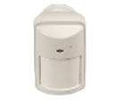
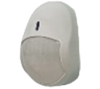
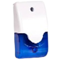
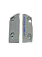
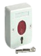
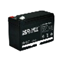
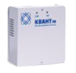
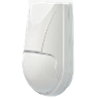
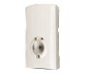
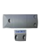

- Дискретная регулировка обнаружительной способности: Режим 10 кг - максимальная дальность 10 м (кошки, декоративные собаки); Режим 20 кг - максимальная дальность 9 м (кошки и небольшие собаки);Режим 40 кг - максимальная дальность 8 м (длинношерстные собаки); Режим 40 кг - максимальная дальность 7 м (любые собаки до 40 кг);
- Микропроцессорная обработка сигнала
- Устойчив к засветке более 6500 лк
- Установка на стене и в углу помещения
- Рассчитан на подключение к источнику питания постоянного тока с выходным напряжением (8…30 В)
- Извещатель выдает тревожное извещение размыканием шлейфа сигнализации контактами исполнительного реле
Проводные системы безопасности
Центральные

Датчик Patrol - 801
12240тг
Цифровой совмещенный пассивный извещатель с акустическим датчиком разбития стекла. Дальность обнаружения пир извещателя 15 м х 110°, Дальность обнаружения датчика разбития стекла 12 м х 160°

Клавиатура K14-LED
13200тг
Проводная клавиатура c динамиком для управления контрольными панелями серии Норд.

Скиф ИК 40
5040sтг
Обеспечивает устойчивость к перемещению домашних животных весом до 40 кг.
- Сферическая линза, обеспечивающая зону обнаружения без искажений и высокую собирающую способность
Контакт магнитный Скиф СМК-М
3480тг
Магнитоконтактный датчик накладной, корпус металлический, 50х30х25мм, магнит 45х8х8 мм предназначен для монтажа на металлические конструкции. Расстояние при размыкании контактов, более 65 мм - при замыкании менее 30мм. Диапазон коммутируемых напряжений, В 0,1 - 100,0 . Диапазон коммутируемых токов, А 0,0001 - 0,1. Диапазон рабочих температур, °С -50 - +50. В комплекте металлический гофрорукав, длиной 0,4 м.

Сирена EGB 96 B
2520тг
Оповещатель комбинированный EGВ-96В предназначен для выдачи светового и звукового сигналов на объектах, оснащенных охранной сигнализацией Напряжение питания постоянного тока, 12±1,2 В Рабочее напряжение постоянного тока 6-15 В Потребляемый ток 280 мА Уровень звукового давления не менее 94 дБ Время непрерывной работы в режиме "тревога" не ограничено Габаритные размеры 122,2х73,8х43 мм Имеет один вход на световой и звуковой оповещатель

Контакт магнитный Скиф СМК-П
1920тг
Извещатель охранный точечный магнитоконтактный СКИФ СМК-П (далее извещатель) предназначен для блокировки гаражных ворот, ангаров, железнодорожных контейнеров, телефонных шкафов и других конструктивных магнитопроводящих (металлических) и магнитонепроводящих (алюминиевых, деревянных и т. д.) элементов зданий и сооружений на открывание или смещение с выдачей в шлейф приемно-контрольного прибора извещения о тревоге путем размыкания контактов геркона. Извещатель может использоваться вместо концевых механических выключателей Расстояние при восстановлении- 30 мм, расстояние при тревоге- 65 мм. В комплекте пластиковый гофрорукав, длиной 0,5 м.

Кнопка с фиксацией СКИФ 01
2520тг
Кнопка с фиксацией.Перекидной контакт (НЗ, НР). Корпус пластмассовый. Коммутируемый ток- до 0,3А. Номинальное напряжение питания - 12 /24VDC. Количество механических циклов переключения - 1000000. Рабочая температура - от -30оС до +50оС. Размеры - 55х55х27мм.
панели

Аккумулятор,SF,12V-7A
7720тг
Напряжение 12В, емкость 7Ач, срок службы до 2 лет. Разработана для резервного электропитания охранно-пожарных систем и приборостроения. Габариты, мм (Д/Ш/В) 152/65/94

Блок питания Квант -30
16320тг
Источник бесперебойного питания, импульсный. Uвх=~220V AC, Uвых=13,4V DC, Iн=3А, под аккум. 7 А·ч, защита АКБ от глубокого разряда, защита от КЗ, защита от перегрева, защита от переполюсовки, 235x165x80 мм

Извещатель охр.объемн.опто-электронный Пирон - 4Д
112700тг
Извещатель охранный объемный оптико-электронный. Основные особенности: «Пирон-4Д» – объемная зона обнаружения с устойчивостью к перемещению домашних животных массой до 20 кг Технические характеристики:
Максимальная дальность обнаружения 10 м
Высота установки 2,3 м
Напряжение питания 8…30 В
Потребляемый ток 12 мА
Температурный диапазон -30 … +50° С
Степень защиты, обеспечиваемая оболочкой IP41
Габаритные размеры 90х60х50 мм
Подробнее

Астра - 531, АК датчик разбития
4200тг
Извещатель предназначен для: - обнаружения разрушения стекол остекленных конструкций закрытых помещений и формирования извещения о тревоге путем размыкания выходных контактов сигнального реле. Типы стекол:
- обычные и защищенные полимерной пленкой толщиной от 2.5 до 8 мм
- армированные толщиной 5.5 и 6 мм
- узорчатые толщиной от 4 до 7 мм
- многослойные строительные толщиной от 6 до 8 мм
Технические параметры АК канала
Максимальная рабочая дальность действия в секторе объемного угла из центра микрофона120 град, 6 м
Рабочие частоты:
Первая 6000+/-100 Гц
Вторая 150+/-10 Гц
Чувствительность:
На первой рабочей частоте 80+/-1 Дб
На второй рабочей частоте 83.5+/-0.5 Дб
Общие технические параметры
Напряжение питания от 8 до 15 В
Ток потребления в дежурном режиме и в режиме «Тревога» не более, 18 мА
Время технической готовности не более, 60 с
Допустимый ток через контакты реле не более, 0.08 А
Допустимое напряжение на контактах реле не более, 100 В
Сопротивление цепи, включаемой в шлейф сигнализации, в дежурном состоянии не более, 8 Ом
Допустимый ток через цепь ТМР не более, 0.05 А
Допустимое напряжение через цепь ТМР не более, 72 В
Габаритные размеры 62х37х29
Масса извещателя 0.03 кг
Условия эксплуатации
Диапазон температур от -20 до +50 град
Относительная влажность воздуха до 95% при +35 град без конденсации влаги.
Подробнее

Датчик PATROL-501
4200тг
«Patrol-501» - датчик разбития стекла – предназначен для регистрации акустических (звуковых) колебаний, возникающих при разрушении стекла. Алгоритм работы датчика основан на принципе двухканального обнаружения последовательности сигналов разрушения стекла. Извещение о тревоге формируется путем размыкания контактов реле и световой индикацией.
Технические характеристики
Напряжение питания: 9 – 16 В
Ток потребления в дежурном режиме: 17.8 мА
В режиме «Тревога» 18.7 мА
Время выдачи сигнала «Тревога» 3 сек
Время «готовности» датчика 2 сек
Дальность обнаружения 12 м х 170 град
Выход реле: НЗ; 60В; 120 мА; 16 Ом
Тампер: НЗ; 10 Ом
Тип микрофона: электретный всенаправленный
Диапазон рабочих температур от – 30 до + 80 град
Диапазон температур хранения от – 50 до + 80 град
Защита от RFI-помех: 30 В/м в диапазоне от 10 до 1000 МГц
Защита от EMI помех: 50 000 В
Габаритные размеры: 87х52х24 мм
Вес 54 гр.
Подробнее

Контакт магнитный Скиф СМК-П 1
1920тг
Извещатель охранный точечный магнитоконтактный СКИФ СМК-П 1(далее извещатель) предназначен для блокировки гаражных ворот, ангаров, железнодорожных контейнеров, телефонных шкафов и других конструктивных магнитопроводящих (металлических) и магнитонепроводящих (алюминиевых, деревянных и т. д.) элементов зданий и сооружений на открывание или смещение с выдачей в шлейф приемно-контрольного прибора извещения о тревоге путем размыкания контактов геркона. Извещатель может использоваться вместо концевых механических выключателей Расстояние при восстановлении- 30 мм, расстояние при тревоге- 65 мм. Идет с пластиковой гофрой в комплекте.